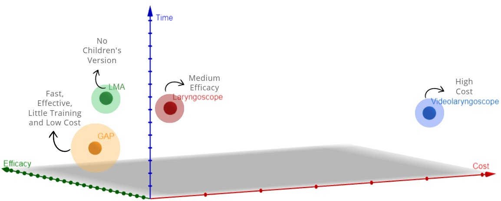

Market Breakdown: From Total Opportunity to Captured Market


Total Addressable Market (TAM)
The largest potential market, combining all possible pediatric and adult patients, valued at $187.8 million.
Available Market for Services (SAM)
Focusing specifically on children under 15, this segment reduces to $28.17 million.
Captured Market (SOM)
The most relevant market, focusing on children under 1 year, where we expect to engage directly, valued at $5.63 million.
Market Gap
- The laryngoscope, although widely used and low-cost, has a success rate of less than 50% on the first attempt.
- The videolaryngoscope is the gold standard but is expensive, making it inaccessible for public healthcare in countries like Brazil.
- The laryngeal mask (fasttrack) is a cost-effective solution but is not available for pediatric use.
The gap lies in developing a device that enables quick, effective intubation with minimal training and low cost.